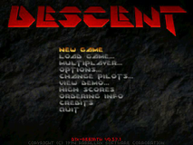
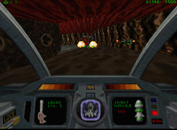
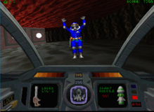
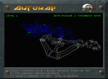
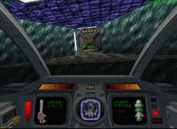
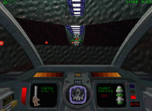
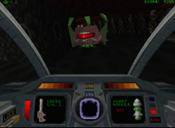
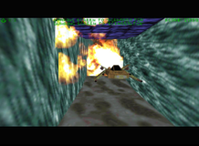
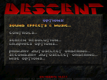

Descent
Dieser Artikel wurde für die folgenden Ubuntu-Versionen getestet:
Ubuntu 16.04 Xenial Xerus
Zum Verständnis dieses Artikels sind folgende Seiten hilfreich:
Die Spiele der Descent-Reihe sind 3D-Shooter. Descent¹ und Descent² wurden 1994 und 1996 von Parallax Software entwickelt und setzten durch absolute Bewegungsfreiheit und Rotation um 360 Grad in alle Richtungen neue Maßstäbe. Ursprünglich wurden die Spiele für DOS entwickelt, durch die Freigabe des Quellcodes sind jedoch eine Vielzahl an Portierungen für Linux entstanden.
Dieser Artikel behandelt die Ausführung von Descent 1 und 2 mit Hilfe des Ports "DXX-Rebirth". DXX-Rebirth stellt nur die Spielumgebung bereit, die Spieldaten sind nicht enthalten. Es stehen aber eine voll Funktionsfähige "Demo-Version" (Descent²) sowie eine Shareware-Version (Descent¹) zur Verfügung.
Hinweis:
Die manuelle Installation funktioniert seit Trusty Tahr nicht mehr. Hier den alternativen Weg beschreiten.
|  |  |  |
| Menü | Kämpfen | Geiseln befreien |
Zur Geschichte: Die Schürfroboter der PTMC-Minengesellschaft auf dem Mond und anderen Planeten wurden durch Außerirdische unter ihre Kontrolle gebracht. Die wenigen menschlichen Angestellten wurden gefangen genommen oder getötet. Der Spieler findet sich nun als Pilot eines Raumschiffs - des Pyro GX - wieder, mit dessen Hilfe er die Roboter eliminieren und die Gefangenen befreien muss.
Manuelle Installation¶
CD-Version¶
Vorbereitung¶
Folgende Pakete müssen installiert werden [1]:
arj (universe, ZumEntpacken der Daten von der Original-CD von Descent 2)
scons
libsdl1.2-dev
libsdl1.2debian
libphysfs-1.0-0
libphysfs-dev (universe)
libglu1-mesa
libglu1-mesa-dev
libsdl-mixer1.2-dev (universe)
 mit apturl
mit apturl
Paketliste zum Kopieren:
sudo apt-get install arj scons libsdl1.2-dev libsdl1.2debian libphysfs-1.0-0 libphysfs-dev libglu1-mesa libglu1-mesa-dev libsdl-mixer1.2-dev
sudo aptitude install arj scons libsdl1.2-dev libsdl1.2debian libphysfs-1.0-0 libphysfs-dev libglu1-mesa libglu1-mesa-dev libsdl-mixer1.2-dev
|  |  |  |
| Die Mine | Der Ausgang | Reaktor zerstören |
Spielumgebung¶
Die Spielumgebung kann entweder über die Projektseite oder aus den Paketquellen installiert werden. Auf der Projektseite ist eine aktuellere Version zu finden und kann von DXX-Rebirth (Descent 1 & 2) 
 heruntergeladen werden.
heruntergeladen werden.
Danach wird das Archiv in einen beliebigen Ordner entpackt [3]. Damit die darin enthaltenen Skripte ausgeführt werden können, müssen zunächst Schreibrechte in diesem Ordner und den darin enthaltenen Dateien gegeben sein [4].
Um das Programm einzurichten, müssen in einem Terminal [2][6] folgende Befehle eingegeben werden:
cd /PFAD/ZU/DXX-REBIRTH sudo scons sdlmixer=1 install
Nun startet der Kompiliervorgang. Warnungen können ignoriert werden, der Vorgang sollte jedoch mit den Worten scons: done building targets. abgeschlossen sein.
Damit hat man die Installation der Spielumgebung abgeschlossen. Nun müssen noch die Spieldaten besorgt werden.
|  |
| Er stiehlt Deine Popups |
Paketquelle¶
Seit Ubuntu 14.04 können beide Spiele über das Ubuntu-Software-Center installiert [1] werden:
d1x-rebirth (multiverse, Paket für den ersten Teil)
d2x-rebirth (multiverse, Paket für den zweiten Teil)
mit apturl
Paketliste zum Kopieren:
sudo apt-get install d1x-rebirth d2x-rebirth
sudo aptitude install d1x-rebirth d2x-rebirth
Dies ist nicht nur bequem, sondern auch sinnvoll, weil die manuelle Installationsanleitung nicht mehr funktioniert.
CD-Version¶
Nach der Installation das Spiel starten, es passiert scheinbar nichts. Im Homeverzeichnis wird aber ein verstecktes Verzeichnis ~/.d1x-rebirth bzw. ~/.d2x-rebirth angelegt. Dort hinein müssen die unten genannten Spieldaten, dann sollten beide Spiele funktionieren. Nach Möglichkeit die gepatchten Spieldaten verwenden (siehe Fehlermeldung).
Spieldaten¶
Die Spielumgebung ist installiert, man benötigt aber zusätzlich einige Dateien von der Descent1- bzw. Descent2-CD-ROM. Alternativ kann man die Dateien der eingeschränkten Testversionen verwenden.
|  |
| Mine verlassen |
| Spieledateien | |
| Spiel | Datei |
| Descent 1 | descent.hog |
| descent.pig | |
| optional können die *.pcx- und *.mvl-Dateien (Bilder und Videos) verwendet werden | |
| Descent 2 | descent2.ham |
| descent2.hog | |
| descent2.s11 | |
| descent2.s22 | |
| alien1.pig | |
| alien2.pig | |
| fire.pig | |
| groupa.pig | |
| ice.pig | |
| water.pig | |
| intro-h.mvl oder intro-l.mvl | |
| other-h.mvl oder other-l.mvl | |
| robots-h.mvl oder robots-l.mvl | |
Diese Dateien müssen in das Konfigurationsverzeichnis ~/.d1x-rebirth bzw. ~/.d2x-rebirth kopiert werden.
Hinweis:
Das Verzeichnis ~/.d2x-rebirth/data funktioniert bei Descent 2 ebenfalls und sorgt ggf. für mehr Ordnung, da in ~/.d2x-rebirth vom Spiel selbst weitere Dateien wie die Spielerprofile oder Logdateien abgelegt werden.
CD-Version¶
Bei Descent² befinden sich (bis auf die Videos) die Dateien in einem Archiv in der Datei descent 2.sow, welche ein .ARJ-Archiv darstellt. Mit den folgenden Befehlen wird diese in den Ordner von d2x-rebirth extrahiert [3]:
cp /cdrompfad/D2DATA/DESCENT2.SOW /tmp/descent2.arj #Pfad ggf. anpassen arj e /tmp/descent2.arj ~/.d2x-rebirth
GOG-Version¶
Sofern man Descent + Descent 2 über diesen Vertriebsweg erworben hat kann man über Innoextract an die benötigten Dateien gelangen [7].
innoextract -L setup_descent_2.1.0.8.exe
Die Ausgabe (Descent) sieht wie folgt aus:
Extracting "Descent" - setup data version 5.5.0 (unicode) - "app/__support/save/descent.cfg" (286 B) - overwritten - "app/dosboxdescent.conf" (10.6 KiB) - overwritten - "app/dosboxdescent_client.conf" (174 B) - overwritten - "app/dosboxdescent_server.conf" (166 B) - overwritten - "app/dosboxdescent_settings.conf" (121 B) - overwritten - "app/dosboxdescent_single.conf" (123 B) - overwritten - "tmp/gog.ico" [temp] (67.6 KiB) - overwritten - "app/__support/app/" - "commonappdata/galaxyclient/webcache/code:getdlccoregame|#gameid/img/" - "app/__support/save/descent.cfg" (286 B) - "app/dosboxdescent.conf" (10.6 KiB) - "app/dosboxdescent_client.conf" (174 B) - "app/dosboxdescent_server.conf" (166 B) - "app/dosboxdescent_settings.conf" (121 B) - "app/dosboxdescent_single.conf" (123 B) - "app/chaos.hog" (170 KiB) - "app/chaos.msn" (309 B) - "app/descent.b50" (1.47 KiB) - "app/descent.bat" (162 B) - "app/descent.dem" (2.11 MiB) - "app/descent.faq" (47.2 KiB) - "app/descent.hog" (6.54 MiB) - "app/descent.m50" (946 B) - "app/descent.phx" (2.03 KiB) - "app/descent.pig" (4.69 MiB) - "app/descent2.adv" (1.31 KiB) - "app/descentg.ini" (5.08 KiB) - "app/descentr.exe" (1.08 MiB) - "app/devteam.pcx" (22.8 KiB) - "app/goggame-1207663083.dll" (257 KiB) - "app/goggame-1207663083.hashdb" (1.13 KiB) - "app/goggame-1207663083.ico" (117 KiB) - "app/goggame-1207663083.info" (1.59 KiB) - "app/hmidet.386" (16.7 KiB) - "app/hmidrv.386" (113 KiB) - "app/hmimdrv.386" (109 KiB) - "app/level18.dem" (267 KiB) - "app/manual.pdf" (6.21 MiB) - "app/miniboss.dem" (394 KiB) - "app/pcxview.exe" (12 KiB) - "app/phqghume.ayl" (0 B) - "app/readme.txt" (11 KiB) - "app/refcard.pdf" (43.8 KiB) - "app/setup.exe" (388 KiB) - "app/webcache.zip" (153 B) - "app/dosbox/dosbox-0.74.tar.gz" (1.21 MiB) - "app/dosbox/dosbox.exe" (3.55 MiB) - "app/dosbox/sdl.dll" (437 KiB) - "app/dosbox/sdl_net.dll" (13 KiB) - "app/dosbox/documentation/dosbox_authors.txt" (276 B) - "app/dosbox/documentation/dosbox_copying.txt" (17.9 KiB) - "app/dosbox/documentation/dosbox_install.txt" (3.84 KiB) - "app/dosbox/documentation/dosbox_news.txt" (31.4 KiB) - "app/dosbox/documentation/dosbox_readme.txt" (61.7 KiB) - "app/dosbox/documentation/dosbox_thanks.txt" (1001 B) - "app/dosbox/video codec/video instructions.txt" (1.57 KiB) - "app/dosbox/video codec/zmbv.dll" (92 KiB) - "app/dosbox/video codec/zmbv.inf" (3.95 KiB) - "app/dosbox/gogdosconfig.exe" (2.84 MiB) Done.
Der Ordner tmp wird nicht benötigt und kann direkt gelöscht werden. Die Spieledaten können anschließend aus dem Verzeichnis app übernommen werden. Diese nach ~/.d1x-rebirth (Descent) bzw. ~/.d2x-rebirth (Descent 2) verschieben.
Jetzt ist der Port einsatzbereit und kann mit d1x-rebirth-gl bzw. d2x-rebirth gestartet werden [5]. Standardmäßig wird das Spiel im Vollbildmodus ausgeführt. Wer mehrere Monitore nutzt, sollte die Option -window an obige Befehle anhängen. Weitere Optionen können per -h in Erfahrung gebracht werden.
|  |
| Optionen |
Steuerung¶
Nach dem ersten Start des Spieles sollte man die Grafikeinstellungen überprüfen. Auch auf die Tastaturbelegung sollte man einen Blick werfen. Voreingestellt sind u.a.:
| Standardtastaturbelegung | |||
| Taste | Bewirkt | Taste | Bewirkt |
| A | Vorwärts fliegen | Z | Rückwärts fliegen |
| Q | Rotation um Flugachse links | E | Rotation um Flugachse rechts |
Insbesondere sollte man sich die Tasten für die seitlichen Bewegungen (Slide up/down/left/right) anschauen. Diese sind für den Kampf gegen die Roboter sehr hilfreich.
Folgende Tastaturbefehle sind u.a. während des Spieles aufrufbar:
| Sonstige Tastaturbelegung | |||
| Taste | Bewirkt | Taste | Bewirkt |
| F1 | Allgemeine Hilfe | Esc | Spiel abrechen |
| Alt + F2 | Spiel speichern | Alt + F3 | Spiel laden |
| Druck | Erstellt einen Screenshot. Die Bilder werden im Unterordner screenshot des Datenverzeichnisses gespeichert. | F2 | Optionsmenü |
Nützliche Zusätze¶
Auf der Seite addons des dxx-Rebirth-Projektes werden verschiedene Zusätze, wie deutsche Übersetzungen oder ein neuer Soundtrack, zur Verfügung gestellt. Die meisten Dateien liegen als gepackte zip-Datei vor, brauchen jedoch nicht entpackt zu werden. Man speichert sie einfach im jeweilige Datenverzeichnis.
Zusatz Missionen¶
Auf der Seite Descent Mission Database findet man weitere Missionen, die teilweise auch mit der Sharewareversion von Descent¹ gespielt werden können. Es gibt sowohl Einzelspieler- als auch Mehrspielermissionen. Man entpackt [3] die ZIP-Dateien im Homeverzeichnis in den Unterordner ~/.d1x-rebirth/missions. Die Missionen erscheinen im Spiel, wenn man im Startbildschirm "New Game" auswählt.
Hinweis:
Möchte man Zusatzmissionen für Descent² spielen, ist die Vollversion notwendig.
Problemlösung¶
Keine Musik im Spiel¶
Die originalen Musikdateien von Descent² liegen im Audio-CD-Format vor, D2X-Rebirth kann diese in der neuesten Version nun auch direkt von der CD ansprechen.
Alternative Musikdateien können von dieser Quelle heruntergeladen werden. Diese müssen in den versteckten Ordner im Homeverzeichnis wie gehabt kopiert werden, um auch Musik in der Shareware-Variante genießen zu können.
Fehlermeldung Descent_1 : "Error: Not enough strings in text file - expecting 621, found 555"¶
Um das Problem zu lösen müssen die Dateien descent.hog und descent.pig gepatcht werden. Den Patch von dxx-rebirth.com herunterladen und entpacken [3].
Dieser Patch beinhaltet folgende Dateien:
descent.hog.diff -> patch-file for descent.hog
descent.pig.diff -> patch-file for descent.pig
README.TXT
Danach geht man wie folgt vor:
Die beiden Dateien descent.hog und descent.pig in den selben Ordner kopieren wie den entpackten Patch.
In diesen Ordner wechseln und die folgenden Befehle [2] ausführen:
patch -p0 < descent.hog.diff descent.hog patch -p0 < descent.pig.diff descent.pig
3. Die beiden gepatchten Dateien descent.hog und descent.pig in das Konfigurationsverzeichnis ~/.d1x-rebirth kopieren
Deinstallation unter Precise Pangolin¶
Da das Spiel nicht über die Paketverwaltung installiert wurde, müssen lediglich folgende Dateien gelöscht werden:
/usr/local/bin/d1x-rebirth-gl bzw. /usr/local/bin/d2x-rebirth-gl (Spielumgebung)
~/.d1x-rebirth bzw. ~/.d2x-rebirth (Spieldaten)
Außerdem natürlich das Verzeichnis mit dem Quellcode und die zum kompilieren benötigten Pakete.

Infobox¶
| Descent | |
| Originaltitel: | Descent |
| Genre: | Shooter, Freeflyer |
| Sprache: | |
| Veröffentlichung: | 1994/1996 |
| Publisher: | Interplay Productions |
| Systemvoraussetzungen: | Läuft |
| Medien: | CD (1) / Download |
| Läuft mit: | nativ |
Links¶
Spiele
 - Spiele Einsteigerseite
- Spiele EinsteigerseiteDXX-Rebirth
Projekt HomepageD2X-XL
Alternativer OpenGL-Port für Descent 2 Descent - Fanseite
 inkl. Cheat-Codes, Downloads und Tipps
inkl. Cheat-Codes, Downloads und Tipps Descent2 - Fanseite
inkl. Cheat-Codes, Downloads und Tipps
Descent Valhalla
- Demos, Missionen, Musik, Patches, Wallpapers, Fonts ... zu Descent 1 - 3
- Erstellt mit Inyoka
-
 2004 – 2017 ubuntuusers.de • Einige Rechte vorbehalten
2004 – 2017 ubuntuusers.de • Einige Rechte vorbehalten
Lizenz • Kontakt • Datenschutz • Impressum • Serverstatus -
Serverhousing gespendet von